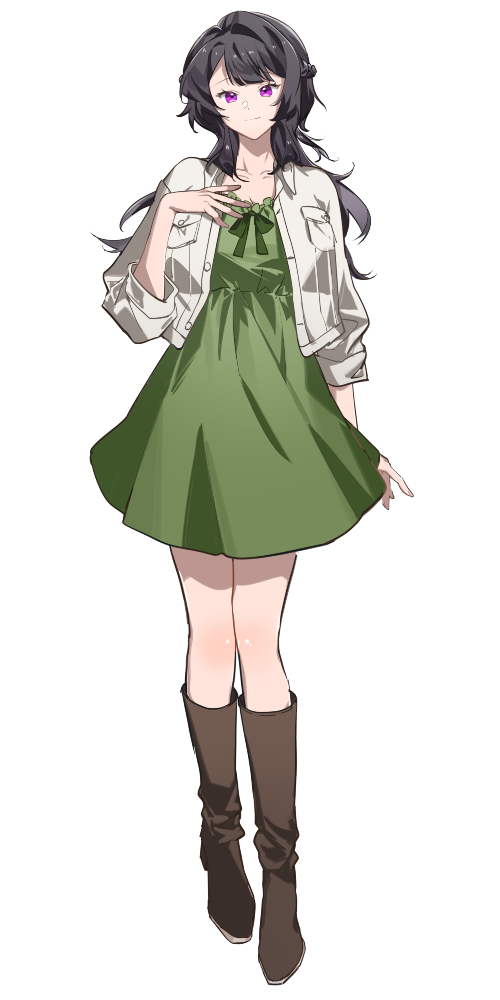
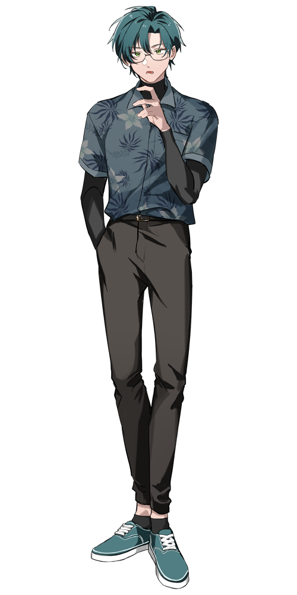

CALL OF CTHULHU TRPG ／ SESSION LOG
浣熊桌團錄 ➤ PULP LOOP
KP：程暮 ｜ SKP：洛雅 ｜ PL：ㄇㄙ
▶PC資訊2 名探索者
黑江 亞矢瞳 PL ㄇㄙ ▶

STATUS
HP13MP14SAN75／75DB+1D4
STR12CON13POW14DEX14APP15SIZ13
INT15EDU17知識85幸運70靈感75
年收900万財產4500万
SKILLS
說服70心理學64聆聽80圖書館63偵查88導航35追蹤65醫學78母語【日語】95歷史40會計30博物學35法律50考古學23人類學33生物學34電子學21天文學21地理學21藥學33化學30物理21神秘學44電腦使用65拳頭60小刀75克蘇魯神話28藝術【靈香】84藝術【花藝】25
ITEMS
黑色肩揹包、手機、皮夾、鑰匙串、手帳本和筆、手套一副、化妝包、隨身鏡、手帕
亞白 檀 PL 洛雅(KPC) ▶

STATUS
HP14MP14SAN72／82DB+1D4
STR15CON15POW14DEX11APP11SIZ12
INT14EDU16幸運70知識80靈感70
SKILLS
話術40聆聽80圖書館65偵查60迴避62駕駛汽車30醫學50日本刀72手槍40克蘇魯神話17藝術【燒香】80製作【料理】70藝術【三味線】35
ITEMS
皮夾（含證件、現金、信用卡等）、手槍S&W M360J、手帕、香菸一包、打火機
✕